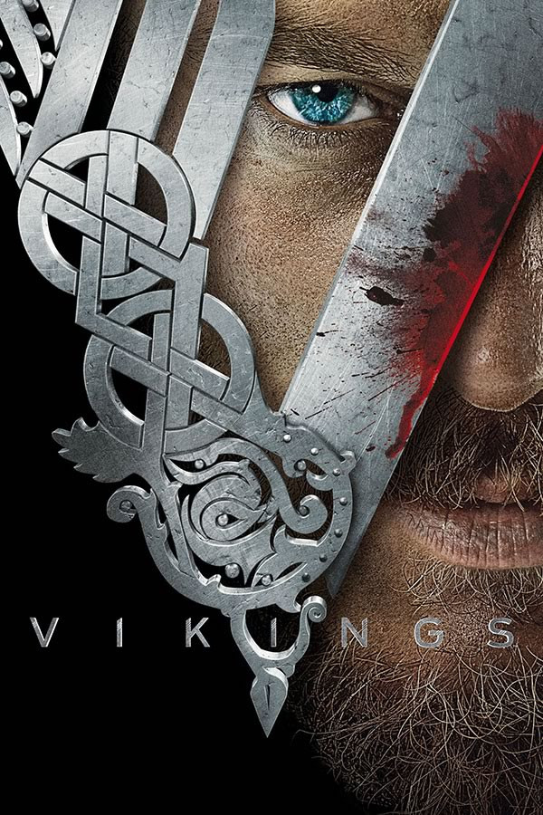

Veja mais séries:
Modern Family
Game Of Thrones
Vikings
Esta série possui 6 temporadas e acompanha a vida de Ragnar Lothbrok,
cujas lendas dizem ser descendente direto de Odin, Deus da mitologia
nórdica. Ragnar é um grande guerreiro, forte e implacável, e torna-se
rei da tribo dos vikings e começa uma jornada para ampliar o domínio
nórdico.

Os 5 melhores episódios são:
- All His Angels - S4.E15
- The Last Ship - S4.E10
- The Dead - S3.E10
- Ragnarok - S5.E20
- King of Kings - S6.E11
Clique aqui e assista Vikings na Netflix!